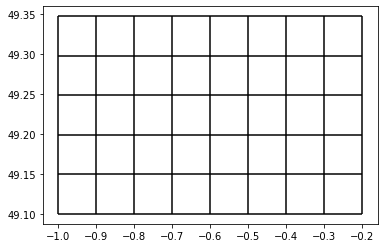

Mesh2d refinement based on Gebco gridded samples
This is a brief introduction to the process of mesh refinement using gridded samples from Gebco global dataset.
It is also an example of refining on spherical coordinates and saving results on spherical coordinates
At the very beginning, the necessary libraries have to be imported.
import matplotlib.pyplot as plt
import numpy as np
from meshkernel import GeometryList, GriddedSamples, MakeGridParameters, MeshKernel, MeshRefinementParameters, RefinementType
Create the starting mesh to refine
lon_min,lon_max = -1,-0.2
lat_min,lat_max = 49.1,49.6
lon_res,lat_res = 0.1,0.1
num_x = int(np.ceil((lon_max-lon_min)/lon_res))
num_y = int(np.ceil((lat_max-lat_min)/lat_res))
make_grid_parameters = MakeGridParameters()
make_grid_parameters.num_columns = num_x
make_grid_parameters.num_rows = num_y
make_grid_parameters.angle = 0.0
make_grid_parameters.origin_x = lon_min
make_grid_parameters.origin_y = lat_min
make_grid_parameters.block_size_x = 0.1
make_grid_parameters.block_size_y = 0.1
pol_x = np.empty(0, dtype=np.double)
pol_y = np.empty(0, dtype=np.double)
geometry_list = GeometryList(pol_x, pol_y)
mk = MeshKernel(is_geographic=True)
mk.curvilinear_make_uniform(make_grid_parameters, geometry_list)
Convert the curvilinear mesh to an unstructured mesh
mk.curvilinear_convert_to_mesh2d()
Plot the mesh
mesh2d = mk.mesh2d_get()
fig, ax = plt.subplots()
mesh2d.plot_edges(ax, color="black")

Mesh refinement
Define a function for reading asc files
def read_asc_file(file_path):
header = {}
data = []
with open(file_path, 'r') as file:
for _ in range(6):
line = file.readline().strip().split()
header[line[0]] = float(line[1])
for line in file:
data_row = [float(value) for value in line.strip().split()]
data.insert(0, data_row)
data = np.array(data).flatten().astype(np.double)
return header, data
Read the bathymetry from ASCII file
header, data = read_asc_file('./data_examples/gebco.asc')
gridded_samples = GriddedSamples(
n_cols=int(header['ncols'])-1,
n_rows=int(header['nrows'])-1,
x_origin=header['xllcenter'],
y_origin=header['yllcenter'],
cell_size=header['cellsize'],
values=data)
Define the mesh refinement parameters
refinement_params = MeshRefinementParameters(
refine_intersected=False,
use_mass_center_when_refining=False,
min_edge_size=2.0,
refinement_type=RefinementType.WAVE_COURANT,
connect_hanging_nodes=True,
account_for_samples_outside_face=False,
max_refinement_iterations=5,
smoothing_iterations=5,
max_courant_time=120.0,
directional_refinement=0)
Refinement can now be performed
mk.mesh2d_refine_based_on_gridded_samples(gridded_samples, refinement_params, use_nodal_refinement=True)
Visualize the refined mesh
mesh2d_refined = mk.mesh2d_get()
fig, ax = plt.subplots()
mesh2d_refined.plot_edges(ax, color="black")